$7,370
Average installed cost per kW for US small-scale wind in 2023.[1]
By adapting proven solar-inverter technology, our design lets WEGEN's 10 kW vertical-axis wind turbine supply grid-ready energy while working toward an installed cost of $2,000 USD per installed kW — down from $7,370 today.[1]
WEGEN is developing a 10 kW Vertical-Axis Wind Turbine (VAWT) with a targeted cost of $2,000 USD per installed kW, against the $7,370 USD per kW that small-scale wind cost in 2023.[1]
The problem: WEGEN's alternator produces three-phase AC electricity whose voltage and frequency change continuously with turbine speed. The voltage has been observed to vary between 50 V and 500 V. This highly variable output cannot be safely connected directly to a home or utility grid — it must first be converted into controlled, synchronized 240 V, 60 Hz AC.
Measured three-phase output from the alternator, at variable frequency — a ten-to-one voltage swing that tracks the wind.
Grid equipment expects the opposite: a fixed 240 V at a fixed 60 Hz, within tight tolerance. Everything in this project exists to bridge those two facts.
Both of our designs reach that 240 V, 60 Hz output through the same conversion path: rectify → DC bus → regulate → invert, with a dump load on the DC bus for protection. That choice follows the small-wind conversion literature,[3][4][5] which also confirms a simple uncontrolled rectifier is sufficient at this scale. A direct AC/AC (matrix converter) route was rejected because it offers no convenient DC bus for battery storage or dump-load protection.[6]
Distributed wind is not a replacement for utility-scale generation. It is a way to put generation where the load already is — behind the meter, at the edge of the grid, or where there is no grid at all.
At sites with strong wind resources — southern Alberta, for example — small-scale wind can offset purchased electricity and export surplus generation.
Commercial and agricultural customers made up 76% of documented US small-scale wind installations in 2023.[1]
Wind can operate alongside batteries and existing diesel generators, reducing fuel consumption, emissions, and dependence on fuel deliveries.
That cuts utility dependence for remote and First Nations communities with a carbon-free source.
The World Bank reported that Syria's national grid supplied only 2–4 hours of electricity per day in 2025, crippling healthcare, water, agricultural and educational infrastructure.[2]
Paired with battery energy storage, small-scale wind is part of bolstering generation in regions like this.
Small-scale wind and its inverters give commercial and community projects real flexibility for "behind the meter" generation.
Units can be added incrementally as demand grows, with built-in redundancy.
The headline number is a ratio between two installed costs per kilowatt: what small-scale wind costs today, and what WEGEN is targeting. Here is the arithmetic, and where the grid-tie stage fits inside it.
Target installed cost per kW for the 10 kW VAWT product.
Reported as 73% — a $53,700 saving on a single 10 kW installation.
($7,370 − $2,000) ÷ $7,370 = 72.9%
Applied to a 10 kW machine: 10 kW × $7,370 = $73,700 at 2023 costs, versus 10 kW × $2,000 = $20,000 at WEGEN's target — a difference of $53,700 per installation.
A reduction of that size is not one saving; it is the whole product. WEGEN's turbine design contributes most of it — a vertical-axis rotor with ground-level service access, built with volume manufacturing partners rather than one-off fabrication. Our capstone owns one block of that budget: the grid-tie stage that turns wild alternator output into grid-ready AC.
That block has to be cheap for the rest of the target to survive. At $2,000 per kW, an entire 10 kW installation is $20,000 — tower, rotor, alternator, foundation, cabling, installation and power electronics included. WEGEN's allowance for the grid-tie stage is under $750, less than 4% of the installed cost. A certified off-the-shelf solar inverter alone starts at about $1,500, before the specialized turbine controller it needs to accept a variable-voltage alternator — which is why the off-the-shelf path, buildable as it is today, cannot reach the target.
Our estimated direct manufacturing cost lands at $635–792. The low end sits comfortably under the $750 ceiling; the high end exceeds it by roughly 6%, and closing that gap depends on supplier quotes for the custom magnetics, enclosure and PCB assemblies. This figure is a direct manufacturing cost — it excludes overhead, margin, certification and warranty.
A 10 kW cost estimate was developed by replacing each block in the 5 V diorama with its industrial, power-rated equivalent (Figure 4). That gives a cost for the inverter in both parts and the labour of putting it together.
Publicly priced components plus quote-dependent items.
Assembly, inspection and functional test.
Against WEGEN's < $750 grid-tie allowance.
| Cost item | Cost (USD) | Basis / source |
|---|---|---|
| Diotec DB50-16, 50 A, 1,600 V three-phase bridge rectifier — 1 unit | $4.23 | DigiKey, 100-unit price of $4.2348 each[8] |
| Rubycon 450USG680MEFCSN35X50, 450 V, 680 µF DC-link capacitors — 4 units | $37.99 | DigiKey, 100-unit price of $9.4966 each[8] |
| Infineon IKW75N65ES5, 650 V, 80 A IGBTs — 8 units | $23.33 | DigiKey, 510-unit price of $2.91661 each; 100 inverters require ≈800 devices[8] |
| TI UCC21520 isolated dual gate drivers — 4 units | $11.48 | Mouser, 250-unit price of $2.87 each[9] |
| LEM HASS 50-S isolated 50 A current sensors — 3 units | $51.76 | DigiKey, 100-unit price of $17.2548 each[8] |
| TI F280049CPZS C2000 DSP controller — 1 unit | $8.47 | DigiKey, 90-unit price of $8.47178 each[8] |
| Mean Well IRM-30-24 auxiliary power supply — 1 unit | $11.10 | DigiKey, 25-unit price of $11.10 each[8] |
| Mean Well SPD-20-240P AC surge protector — 1 unit | $10.50 | DigiKey listed price[8] |
| Littelfuse LSP05G277P Type 2 surge protector — 1 unit | $6.88 | DigiKey, 105-unit price of $6.8761 each[8] |
| American Zettler XMC0-503.ID, 50 A grid contactor — 1 unit | $79.65 | DigiKey, 120-unit price of $79.64725 each[8] |
| American Electrical 2560003, 600 V, 50 A two-pole fuse holder — 1 unit | $15.94 | DigiKey, 102-unit price of $15.94127 each[8] |
| Mersen A60Q40-2, 40 A, 600 V semiconductor fuses — 2 units | $43.51 | DigiKey, 100-unit price of $21.7531 each[8] |
| Sunon MEC0252V2, 120 mm, 24 V cooling fans — 2 units | $21.53 | DigiKey, 120-unit price of $10.764 each[8] |
| Publicly priced component subtotal | $326.37 | Sum of distributor-priced rows above |
| Interleaved boost inductors and high-current film capacitors | $45 – 65 | Estimate: allowance for ≈2 custom high-current inductors, winding material, magnetic cores and associated film capacitors |
| LC/LCL grid-filter inductors and capacitors | $60 – 90 | Estimate: custom 40–50 A inductors, film capacitors, copper winding and core material. Final cost depends on switching frequency, allowable ripple, inductance and thermal design |
| Power and control PCB assemblies, passives and precharge circuit | $55 – 80 | Estimate: production-volume fabrication of power and controller boards, excluding the major semiconductors listed above |
| Heat sinks, laminated or formed busbars and thermal-interface material | $45 – 65 | Estimate: extruded heat sinks, machined mounting surfaces, copper or aluminum busbars, insulation and thermal pads |
| Enclosure, terminals, internal conductors and mounting hardware | $45 – 70 | Estimate: low end assumes a standardized indoor enclosure; high end allows for fabricated sheet metal, terminals, cable glands and additional hardware |
| Dump-load chopper interface | $20 – 35 | Estimate: switching interface, driver, sensing and connection hardware. The external dump-load resistor bank is not included |
| Production assembly labour | $22.03 – 33.05 | Estimate: 1.0–1.5 h × $22.03/h, the 2025 BLS median wage for electrical and electronic equipment assemblers in electrical-equipment manufacturing[7] |
| Electrical inspection and functional-test labour | $12.01 – 18.01 | Estimate: 0.5–0.75 h × $24.01/h, the BLS median for inspectors, testers, sorters, samplers and weighers in the same sector[7] |
| Solder, wire terminations, labels and test consumables | $5 – 10 | Estimate: manufacturing allowance, to be replaced with actual process consumption after a pilot assembly |
| Estimated quote-dependent and labour subtotal | $309 – 466 | Sum of estimated rows |
| Preliminary direct manufacturing cost | $635 – 792 | Publicly priced subtotal plus quote-dependent items and direct labour |
Publicly priced components use volume (25–510 unit) DigiKey and Mouser pricing accessed July 2026;[8][9] estimated rows are preliminary allowances pending supplier quotes. Labour uses 2025 US Bureau of Labor Statistics median wages for electronics assemblers and inspectors.[7] The figure is a direct manufacturing cost: it excludes overhead, margin, certification, warranty, shipping and the external dump-load resistor bank.
We cannot manufacture high-voltage equipment ourselves safely, so we developed two designs in parallel: one that can be built today from off-the-shelf parts, and one downscaled custom design that can be upscaled and manufactured in-house.
A high-voltage design built entirely from commercially available parts: a specialized turbine controller conditions the alternator's hyper-variable output so a standard, certified solar inverter can connect it to the grid.
Trade-off: expensive and inflexible, but suitable for a prototype that can be constructed now.
A 5 V custom inverter, built and demonstrated on the bench, whose architecture can be upscaled and manufactured in-house. This design aligns best with WEGEN's cost objectives.
Trade-off: the full-scale version does not exist yet — what we proved is the architecture, and what we costed is its industrial equivalent.
WEGEN wanted a prototype that could be built now. We designed one that connects the VAWT to the grid through a modified solar inverter, using a specialized voltage controller so an alternator with hyper-variable voltage can drive standard, certified equipment.
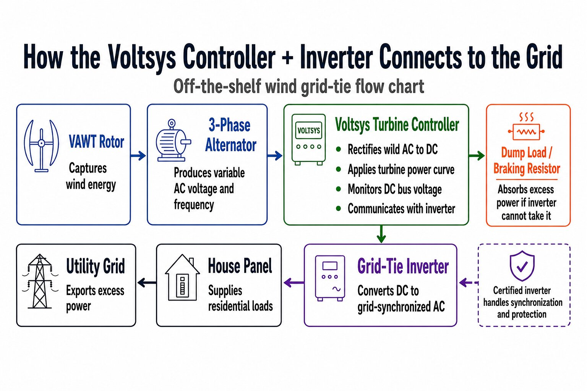
The complete high-voltage design, drawn as a single-line diagram (SLD) with selected equipment: from the Mecc Alte ECP28-3S4C generator through disconnects, the 3-phase diode rectifier and the protected 300–675 VDC bus, to two ABB/FIMER UNO-DM-6.0-TL-PLUS-US inverters and the 120/240 V split-phase residential panel. The IGBT braking chopper and its resistor bank sit on the DC bus as an active voltage clamp.
![Single-line diagram of the high-voltage off-the-shelf grid-tie system, from the VAWT generator through turbine disconnect, cable box, underground cable, three-phase AC circuit breaker, current transformer, three-phase diode rectifier and DC circuit breaker to a protected 300 to 675 volt DC bus, with the Voltsys inverter control unit and ABB/FIMER inverter on one side and a DC semiconductor fuse, IGBT braking chopper and dump-load resistor bank on the other, feeding a 120/240 volt split-phase residential panel and the utility grid](assets/diagrams/single-line-diagram.png)
This design leans on highly specialized equipment made by a small built-to-order manufacturer. That hurts twice: it limits design flexibility, because the parts are niche, and it breaks the cost constraint, because even the cheapest solar inverters start at $1,500 USD.
There is no off-the-shelf solution that meets all of WEGEN's requirements. The design is worth building as a 2027 prototype, but reaching $2,000 per installed kW means building the inverter ourselves.
We built a 5 V model of our custom design as a proof of concept for the architecture of a full-scale 10 kW inverter. Every stage the full-scale machine needs is present in the demonstration, at a voltage that is safe to build and debug on a bench.
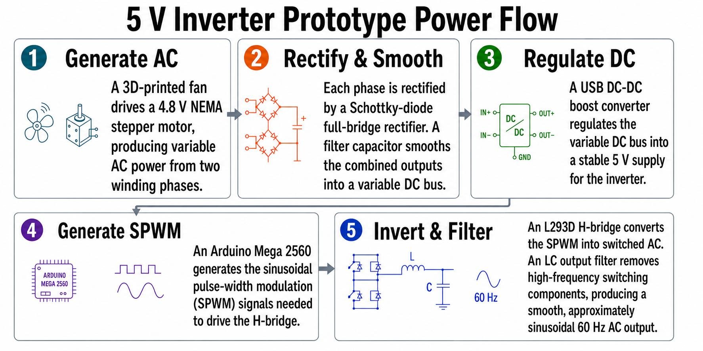
Our 5 V diorama of WEGEN's system is scalable on an architectural level. To make a full-scale version, certain parts in the design have to be swapped with high-voltage equivalents — and that block-by-block substitution is exactly how the 10 kW cost estimate was built.
![Table comparing each stage of the 5 V downscaled model with its 10 kW full-scale equivalent: 4.8 V NEMA 17 stepper motor versus Mecc Alte three-phase alternator; two Schottky full-bridge rectifiers and filter capacitor versus a 10 kW three-phase bridge rectifier with DC-link capacitors, DC fuses and surge protection; 5 V USB DC-DC boost converter versus wind controller with DC bus control and dump-load protection; Arduino Mega 2560 with L293D versus MOSFET or IGBT inverter bridge with DSP; inductor-capacitor output filter versus LC or LCL grid filter; and 60 Hz filtered AC output versus grid synchronization with PLL, anti-islanding, over- and under-voltage and frequency protection, ground fault and certified disconnects](assets/diagrams/scalability.jpg)
Bench measurements captured from the physical 5 V demonstration circuit with a Keysight DSO-X 2012A oscilloscope.
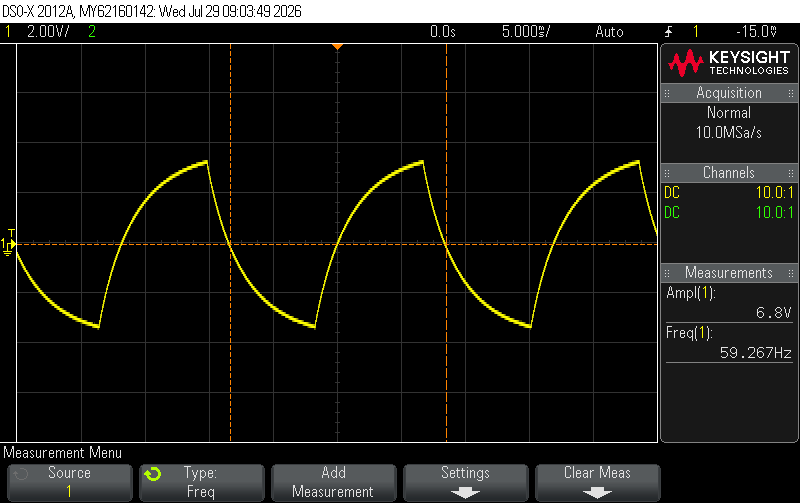
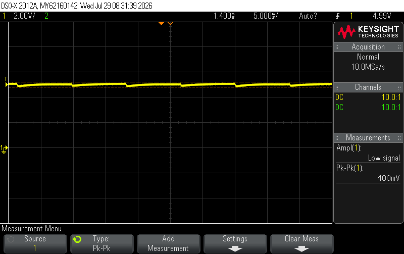
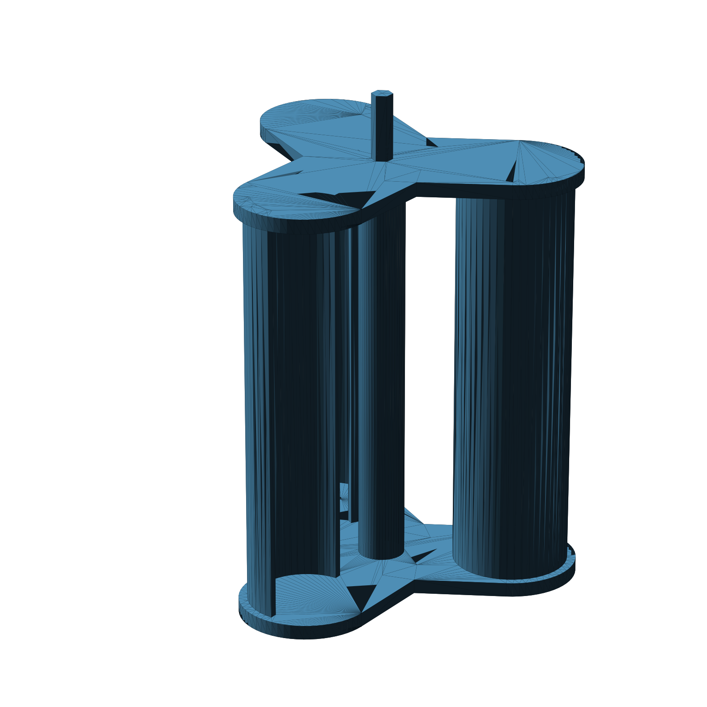
| Rated power | 10 kW |
|---|---|
| Alternator output | 50 – 500 V AC, 3-phase, variable frequency |
| DC bus window | 300 – 675 VDC (protected) |
| Grid output | 120/240 V split phase, 60 Hz |
| Dump-load clamp | ON 560 V / OFF 520 V, 31 – 32 Ω |
| BESS compatibility | Yes, via the DC bus |
| Protection | Overcurrent, overvoltage, dump load, certified disconnects |
The dump load is what keeps a 10 kW turbine from destroying its own DC bus when the grid disappears. It cannot be validated safely on a bench at 600 V, so the power circuit of the off-the-shelf design was modelled and driven through six scenarios in simulation.
The circuit was built in MATLAB Simulink using Simscape Electrical Specialized Power Systems, solved with a discrete solver at a 2 µs fixed time step.[11] Component values and ratings were taken directly from the single-line diagram in Figure 2, so the model and the drawing describe the same machine.
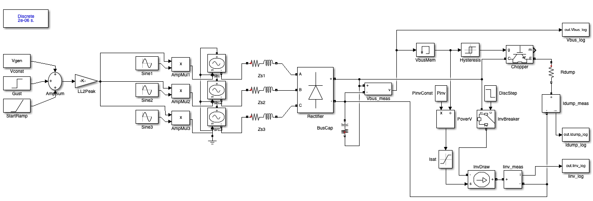
Three sinusoidal voltage sources with series source impedance. The line-to-line RMS command is formed by summing a steady-wind constant, a gust step and a start-up ramp, then scaled to peak — so one model produces every wind scenario.
A three-phase six-pulse diode bridge feeding the DC-link capacitor bank (3 × 1000 µF), which sets both the bus stiffness and the ripple measured in Run 4.
Bus voltage is measured, passed through a relay with hysteresis (ON at 560 V, OFF at 520 V) and used to gate the IGBT chopper across the 31–32 Ω resistor bank. Dump current is logged separately.
Modelled as an averaged constant-power load — P/V with a current saturation limit — drawn through a breaker that can be opened mid-run to simulate an inverter or grid disconnect.
Two limits are drawn on every plot: the 675 V DC-side ceiling of the bus and its protection, and the 580 V maximum DC input of the ABB/FIMER inverter.[10] Staying under 675 V means nothing breaks; staying under 580 V means the inverter can keep exporting.
| Run | Scenario | What it tests | Result |
|---|---|---|---|
| 1 | Steady-state wind sweep, 50–500 V L-L RMS | Bus voltage and delivered power across the whole generator range | Bus rises 42 → 645 V; full 10 kW is reached at ≈200 V generator and held to 500 V. Below ≈250 V the bus sits under its 300 V minimum; above ≈440 V it passes the inverter's 580 V ceiling. |
| 2 | Dump-load clamp validation (large step) | Chopper turn-on threshold and resistor-bank capacity | Clamp fires at 560 V and draws 20.5 A into the bank; bus peaks at 675 V, then settles at ≈647 V. |
| 3a | Gust step at full load | Response when a gust arrives with the system already at rated power | Pre-gust bus 523 V; clamp engages, peak 660 V, settles ≈645 V at 20.5 A. No limit violation. |
| 3b | Inverter disconnect at high wind | Worst case — the load is lost while the turbine is generating hard | The dump load alone holds the bus at ≈578 V at 18.3 A: below the 675 V ceiling and at the inverter's own 580 V limit. |
| 3c | Start-up ramp from zero wind | Energization behaviour and clamp arming | Bus ramps smoothly 0 → 650 V over 2 s with no overshoot; the clamp arms at 1.69 s as the bus crosses 560 V, dump current stepping 17.4 → 20.5 A. |
| 4 | DC bus ripple at steady state | Capacitor-bank sizing | 2.80 V peak-to-peak on a 385.9 V bus — 0.73%, at the expected six-pulse ripple frequency. The 3 × 1000 µF bank is well sized. |
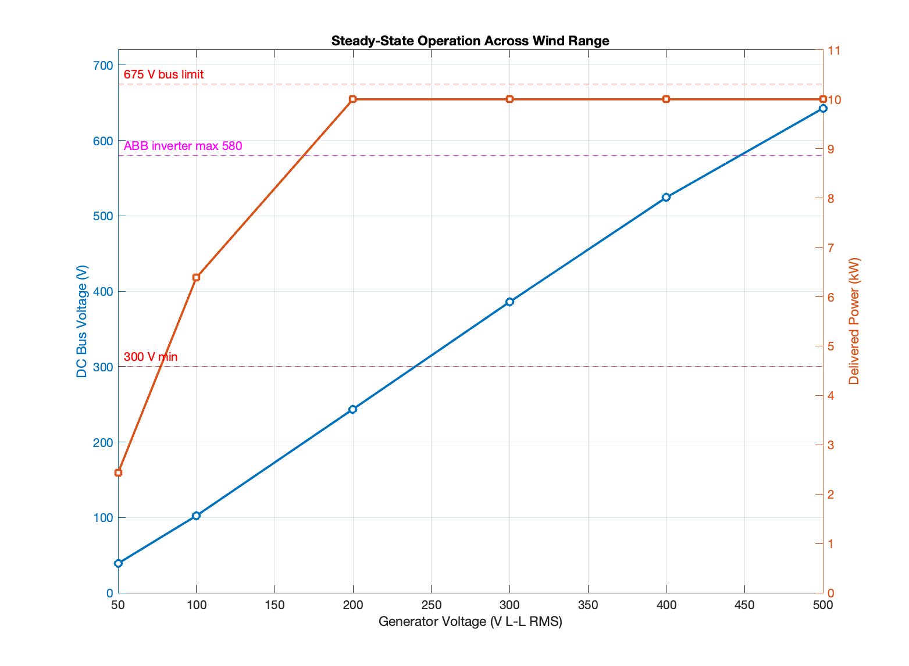
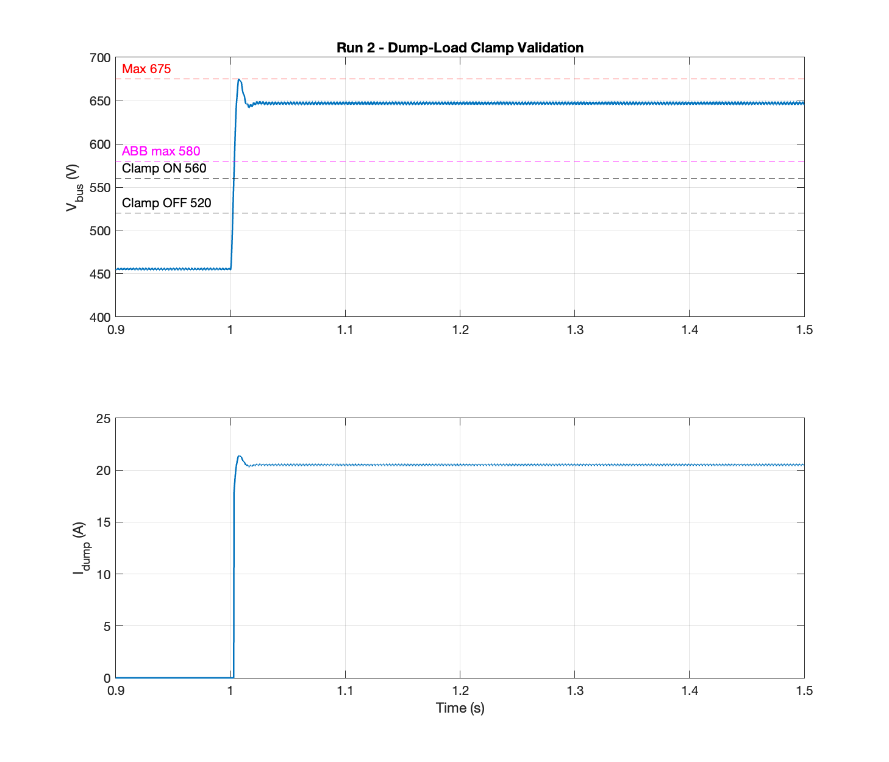
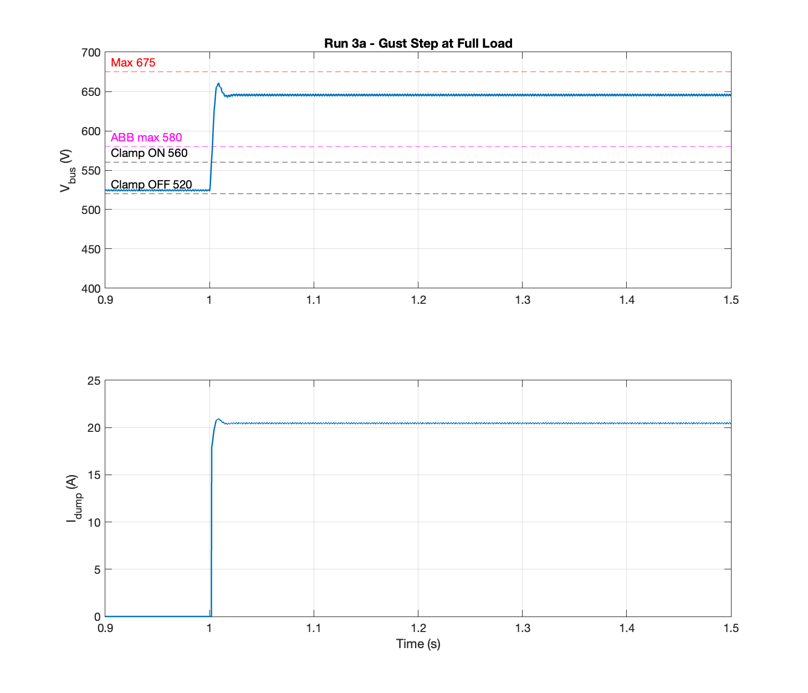
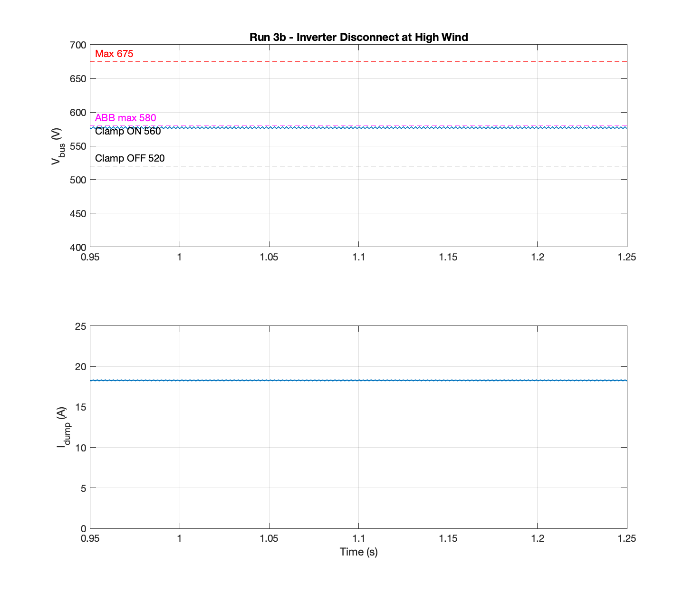
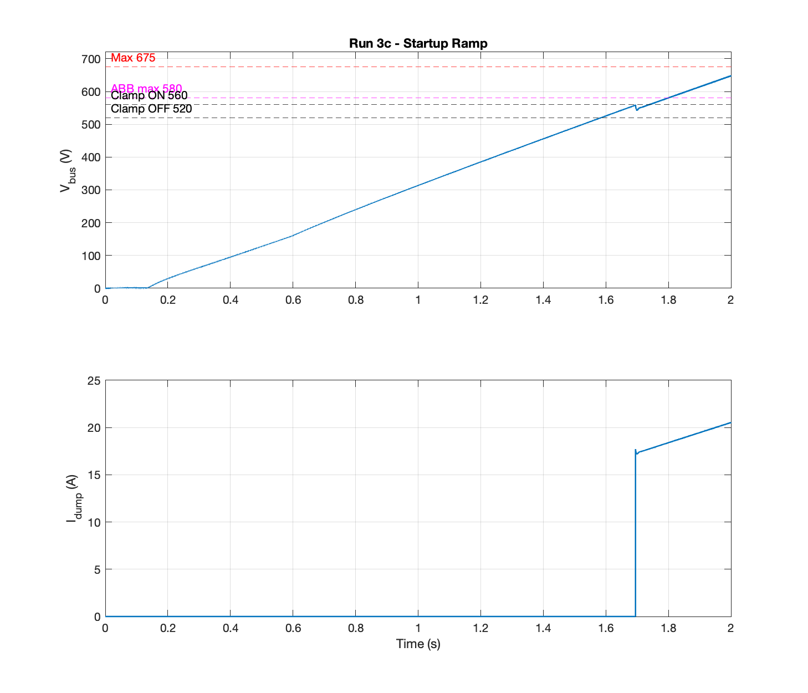
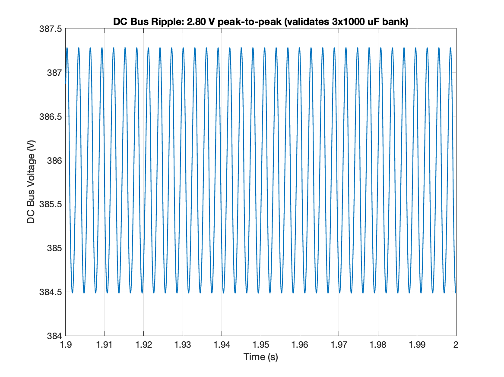
Both designs were developed around WEGEN's instrumented prototype rather than a spec sheet. We visited the turbine and its equipment enclosure to ground the electrical assumptions in what is actually installed on site.
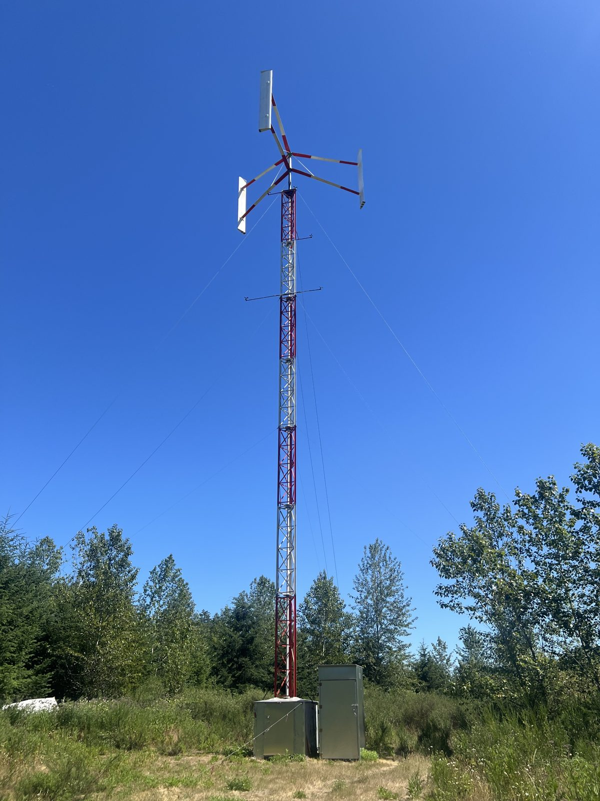
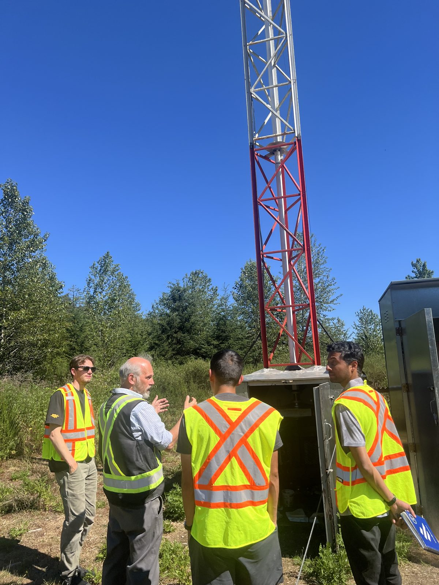
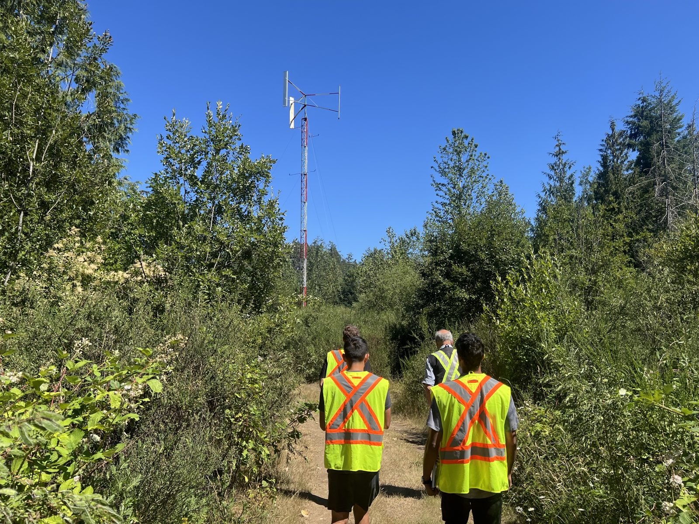
Two recommendations close out the capstone: one that puts a working machine on the grid, and one that turns the costed design into a manufacturable product.
Technical Research
Team Organization & Communications
Design Simulation
Design Safety Reviewer